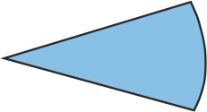

Розселення етнічних меншин у Автономній Республіці Крим
Частка етнічні меншин у загальній чисельності
(%)
| від 39 до 48 | |
| від 48 до 56 | |
| від 56 до 65 | |
| від 65 до 73 | |
| від 73 до 82 |
Населення етнічних меншин
(%)
| білоруси | |
| вірмени | |
| корейці | |
|  | молдовани |
| росіяни | |
| татари | |
| цигани | |
| інші |
Примітка. 1. Інформація подана по результатам перепису 2001 р.
2. Етноси, частка яких становить менше 1% від загальної чисельності населення міст та менше 10% від загальної чисельності населення районів, на карті не відображені.